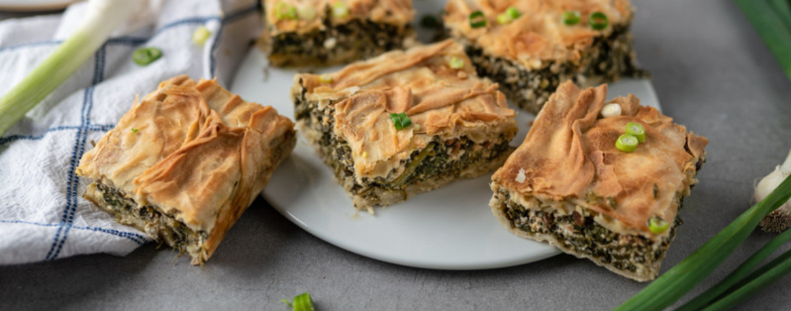

Spanakopita

This is our family recipe for Spanakopita, a great Greek dinner recipe, which can also be enjoyed cold!
- 1 bunch of spring onions
- 1kg of spinach
- 1,5 packages of Feta cheese ~220g
- 2 eggs
- 1 roll of puff pastry
- 1 Tbsp. of milk
- Sesame seeds
- Nutmeg
- Cut the spring onions into rings and sauté until translucent.
- Sauté spinach, cut coarsely, squeeze out water, add onion.
- Cut the puff pastry in half, put it in a baking dish, fill it with the filling and put the other half of the puff pastry on top.
- Spread puff pastry with milk, then sprinkle with sesame seeds.
- Bake at 200 degree Celsius, convection oven for 20min.